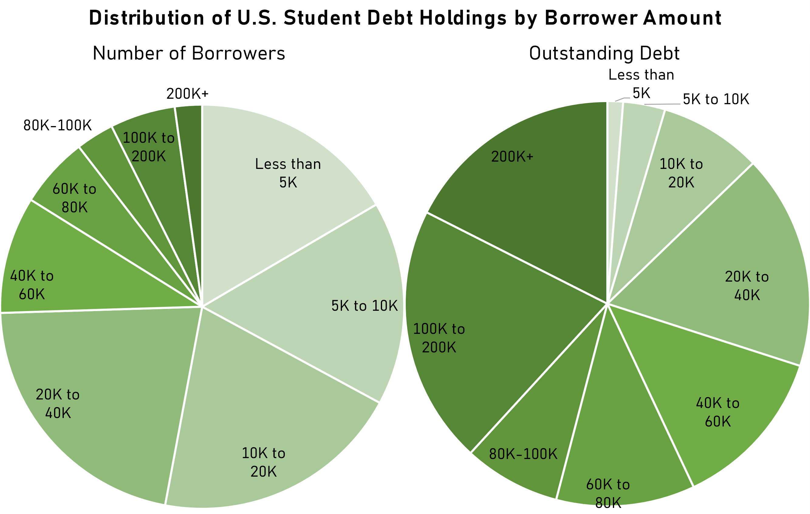
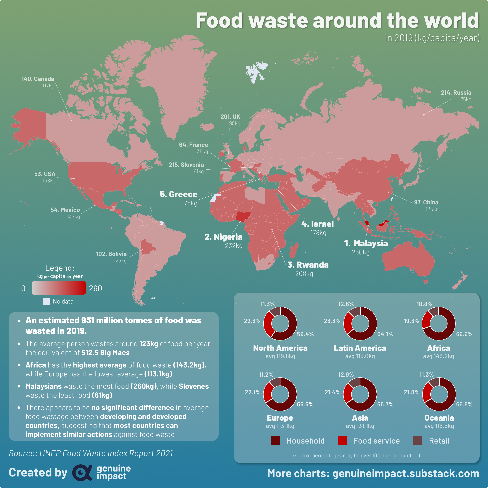

-
1. Pie Chart Visualizing the Distribution of U.S Student Debt Holdings by Borrower
 SourceA brief description.
The charts in the Reddit post visualize the distribution of student debt held by individuals in the United States. The first chart shows the cumulative percentage of debt held by the top 10% of borrowers, with the remaining 90% of borrowers grouped together. The second chart shows the same information, but breaks down the remaining 90% of borrowers into smaller groups.
The charts reveal that the top 10% of borrowers hold almost half of all debt in the United States, with the remaining 90% of borrowers holding the other half. Within the remaining 90%, the distribution of debt is uneven, with the top 20% of that group holding significantly more debt than the bottom 50%.
Overall, the charts highlight the concentration of debt in the hands of a relatively small group of borrowers in the United States, and suggest that there is a significant amount of inequality in the distribution of debt among the population.
Criticisms on data
- Pie chart is a hoorible choice to begin with. I wasted too much time trying to figure out what the pie charts meant.
- When two pie charts are used side-by-side, it can be difficult to compare the slices of each chart accurately.
- Pie charts are limited to showing one variable at a time, so they cannot be used to show how debt amounts vary based on multiple factors (e.g., educational level and institution type).
- While pie charts can be useful for showing the proportions of different categories, they are not effective at showing precise values. This can be a problem when trying to compare debt amounts across different categories
- Too many missing information.
- Using discrete numbers for both charts can be misleading. In fact there is no explanation about the differece between the right and the left chart.
- Color contrast can be misleading
- Use scatter plot or bar chart with categorical color
2. World Map Visualizing Food Waste by Countries
 Source
A brief description.
The visualization map shows the amount of food waste per capita per year in different countries around the world. The map is color-coded, with darker shades of red indicating higher levels of food waste and lighter shades indicating lower levels.The data is based on the report by UN Environment Program.
The data is displayed using a choropleth map, where each country is represented by a colored polygon that corresponds to its respective food waste level. The accompanying legend provides a range of values for the different shades of color and the corresponding amount of food waste per capita per year. Overall, the map highlights the significant disparities in food waste levels between different countries, with some nations wasting much more food than others.
Criticism on idiom and color
One potential issue with the color code is that it is based on a continuous scale, with darker shades indicating higher levels of food waste. However, this can be problematic because the human eye perceives color changes more easily in some areas of the spectrum than others. Therefore, it may be difficult to distinguish between adjacent shades of red on the map.
Suggestion on the VisualizationUsing a categorical color scheme (e.g., using different colors to represent low, medium, and high levels of food waste) may be more effective in communicating the differences between countries.